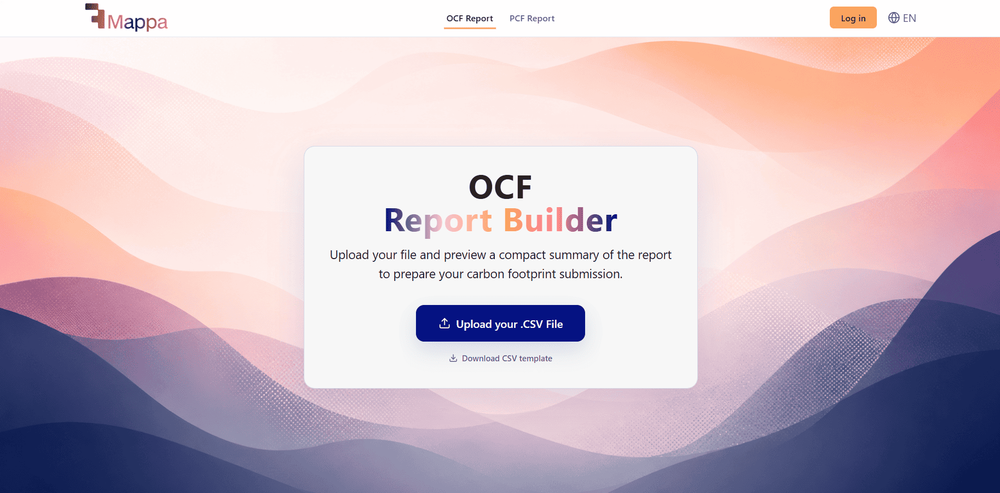

Report PDF
Next.js 16, React 19, Tailwind CSS, Xano, Vercel
Prueba de acceso para Footprint Mappa: una app que genera un PDF de reporte OCF (huella de carbono) con estadísticas y gráficos a partir de un CSV. Fui más allá del encargo y añadí scraping de la web del cliente para personalizar el informe con sus propios datos.
Implementé autenticación contra una base de datos en Xano, un chat de IA para explicar el reporte y un agente de IA (también sobre Xano) que genera recomendaciones para reducir la huella de carbono. Construí frontend y API por completo en una semana mediante vibe coding.